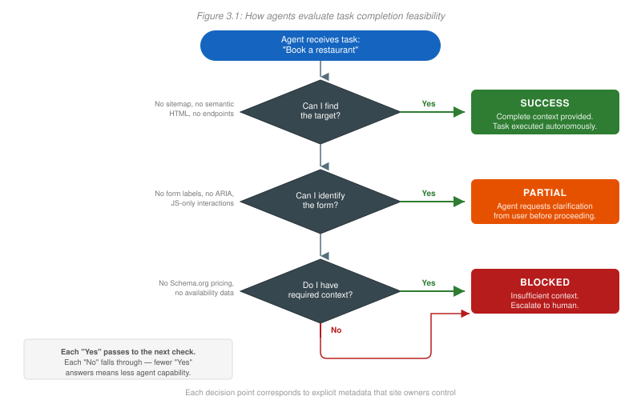

Tom Cranstoun Launches MX: The Handbook: A Practical Guide to Building Websites AI Agents Can Actually Use
Author and CMS veteran Tom Cranstoun has published the first volume in his Machine Experience series, turning a 2024 CMS Critic insight into a full implementation framework for the AI agent era.
Two years ago, Tom Cranstoun wrote a piece for CMS Critic identifying what he called the AI tipping point: the moment when designing for machines became as important as designing for humans. That article landed. It named a conversation the CMS community had been circling without quite articulating.
Now that insight has a book.
MX: The Handbook, published 2 April 2026 by CogNovaMX, is a 320-page implementation guide for what Cranstoun calls Machine Experience (MX): the discipline of designing digital systems so that AI agents can read, trust, and act on them reliably.
Why this matters to CMS professionals
The timing is not accidental. The problem, as Cranstoun documents throughout the book, is that most websites are built for humans: visually rich, JavaScript-heavy, and structurally ambiguous. That works fine when a person is doing the reading. It fails quietly and permanently when the reader is an AI agent.
AI agents don't click, don't scroll, and don't forgive ambiguity. They parse your HTML, evaluate your metadata, and make decisions in milliseconds. If your content isn't structured for them, they move on.
The CMS layer sits at the centre of this. Every content management system in production today either helps or hinders an AI agent's ability to read the content it serves. The Handbook gives CMS teams a framework for understanding which side of that line they are on, and concrete patterns for crossing it.
The January 2026 tipping point
January 2026 was the month the platform assumptions changed. Amazon launched Alexa+, a generative assistant that can transact across third-party sites on a user's behalf. Microsoft launched Copilot Checkout, embedding agent-mediated purchase flows into the Edge browser and Windows shell. Google launched the Universal Commerce Protocol (UCP), defining a machine-readable contract between retailers and agents. Anthropic launched Claude Cowork, giving organisations long-running agent sessions that operate across documents, sites and services.
Four launches in a single month, from four of the largest platform holders on the internet, each pointing at the same target: machines that act on web pages rather than merely index them. The question is no longer whether AI agents will visit your site. They already are. The question is whether they can get anything done when they arrive.
Silence as a failure mode
CMS teams are used to visible failures. A broken template throws an error. A 404 shows up in the log. A failed deployment lights up the dashboard red. Machine Experience failures don't behave like that.
When an agent can't read your page, it doesn't complain. It doesn't file a bug. It just picks a different source, or returns an answer that doesn't include you, or silently routes its user to a competitor whose HTML was easier to parse. There is no alert. There is no ticket. The loss is invisible to the team that caused it.
This is the failure mode the Handbook is built to surface. Cranstoun calls it quiet abandonment: the gradual, measurable erosion of machine-mediated reach as agents learn to avoid content they can't trust. By the time analytics catches up, the behaviour is baked in.
What the book covers
The Handbook is structured as a practical implementation guide rather than a strategic overview. Cranstoun is explicit about the audience: frontend developers, UX designers, technical leads, QA engineers, and business leaders who want to move from theory to working code.
The twelve chapters cover:
- How AI agents actually read your HTML: the served markup, not the rendered page. What the parser sees, and what it skips.
- Semantic HTML and Schema.org patterns: working examples that pass machine audits, not just principles.
- Navigation, JavaScript, and the anti-patterns that silently break machine comprehension, including the routing patterns agents cannot follow.
- Metadata that earns trust: the difference between claims an agent will accept and claims it will flag.
- Testing methodology for AI readability, including the tools and checks that belong in CI.
- The Business Imperative: a chapter written for leaders who need the case in boardroom language, not developer shorthand.
Underpinning all of it is what Cranstoun calls the Five-Stage Machine Journey. Miss one stage, and the chain breaks, not with an error message, but with silence.
The Five-Stage Machine Journey
The framework maps the path an agent takes from first encounter to completed action. Each stage has specific structural requirements on the content side.

- Discovery. The agent has to find the page at all. That means crawlable routes, served HTML, unambiguous canonicals, and a sitemap the agent can trust. Single-page applications that render everything client-side fail here before anything else is tested.
- Citation. The agent has to decide whether the page is worth quoting. That depends on clear authorship, visible publication dates, structural hierarchy the parser can follow, and metadata that identifies the page as authoritative on its topic.
- Compare. The agent has to extract the attributes that let it weigh this page against alternatives. Specifications, capabilities, constraints: if these are locked inside images or hidden behind interactive widgets, the comparison silently excludes you.
- Pricing. The agent has to read cost, currency, availability, and any conditions attached. Prices rendered as images, or loaded after a user interaction, do not appear in the comparison.
- Purchase confidence. The agent has to believe its user will be safe completing the transaction. That means verifiable business identity, return policies in machine-readable form, and provenance signals the agent can cross-check.
The Handbook treats each stage as a testable checkpoint, with the HTML and metadata patterns that satisfy it and the anti-patterns that quietly fail it.
The book series
The Handbook is the second entry point into a three-book series. The free MX: The Introduction (53 pages, no sign-up required) makes the business and technical case and provides a five-step action framework. It is available at mx.allabout.network/books/introduction.html.
MX: The Protocols, due July 2026, is the definitive architectural reference: 800 pages covering the full MX discipline including the Session Inheritance Problem, Identity Delegation for agent-mediated commerce, and the Entity Asset Layer for sovereign digital assets.
| Book | Format | Price | Published |
|---|---|---|---|
| MX: The Introduction | Free | April 2026 | |
| MX: The Handbook | PDF / Print | £25 / £35–£40 | April 2026 |
| MX: The Protocols | £99 | July 2026 |
About the author
Cranstoun has been building content systems since 1977, before the term CMS existed. He co-authored Superbase, worked on the BBC's electronic newsroom, led the world's largest Adobe Experience Manager implementation at Nissan-Renault (500-plus staff, 200-plus websites, 30 languages, five brands), and has held roles at Ford, EE, Jaguar Land Rover, and Twitter/X.
He is a long-standing member of Boye & Company's CMS Experts community and the founder of The Gathering, an open standards body governing the COG metadata specification for machine-readable documents.
His 2024 CMS Critic article is the piece that started this particular thread. The Handbook is where it leads.
Where to get it
MX: The Handbook is available in PDF (£25, instant download) and print editions (£35 UK, £40 worldwide) at mx.allabout.network/books/handbook.html.
The free Introduction is at mx.allabout.network/books/introduction.html.
For MX: The Protocols, join the waitlist at mx.allabout.network/books/protocols.html.
Consultancy, training, and speaking enquiries: info@cognovamx.com.
Tom Cranstoun is a contributor to CMS Critic and a member of Boye & Company's CMS Experts community.